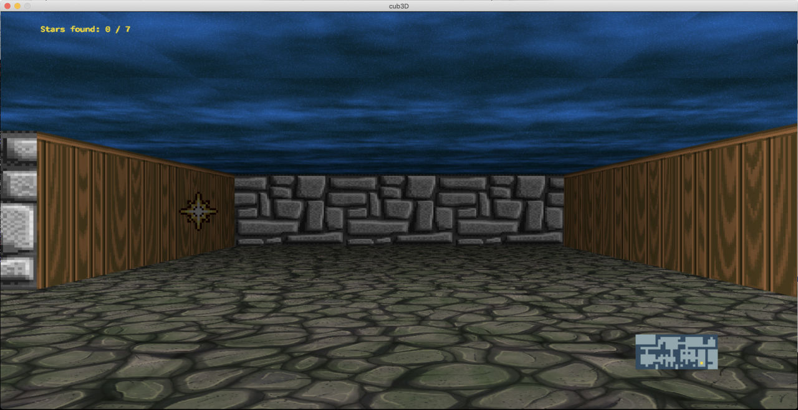

NAIMI Mohamed Amine
I'm a full-stack web developer with experience in HTML, CSS, JavaScript, PHP, and MySQL. I'm passionate about building websites and web applications that are both functional and beautiful. In my free time, I enjoy playing video games and learning new technologies. I'm a student who attends a coding school called "42", which was founded in France and has since expanded to multiple locations around the world. The school is known for its unique pedagogy, which focuses on project-based learning, peer-to-peer review, and a collaborative approach to problem-solving. 42 students are self-directed and motivated learners who engage in a rigorous curriculum that includes programming, algorithms, and computer science fundamentals. The school is open to anyone, regardless of background or experience, and is completely free. 42 students are known for their dedication, passion, and creativity, and often go on to successful careers in the tech industry.
Projects
FdF (Fils de Fer)

"Fils de Fer" or FdF is a 3D wireframe graphical representation game, where the player's objective is to create a topographical map of a given landscape. The game is played on a two-dimensional grid where each cell is represented by a colored dot. The player is given a set of points in the grid that represent the height of the terrain. The player must connect these points to create a wireframe that represents the surface of the terrain. The game is challenging and requires strategic thinking and spatial visualization skills. FdF has gained a following among gaming enthusiasts for its unique gameplay and minimalist aesthetic. It has been praised for its simplicity and originality, and has inspired many other games in the same genre.
View ProjectCUB3D
"CUB3D" is a 3D maze game that challenges players to navigate through a series of complex labyrinths. The game is played from a first-person perspective and features a variety of obstacles and puzzles to solve. The objective of the game is to find the exit of each maze while avoiding traps, enemies, and other hazards. CUB3D has been praised for its immersive gameplay, atmospheric visuals, and challenging puzzles. It has gained a dedicated following among gamers who enjoy exploration and problem-solving, and has been influential in shaping the first-person maze game genre.
View Project